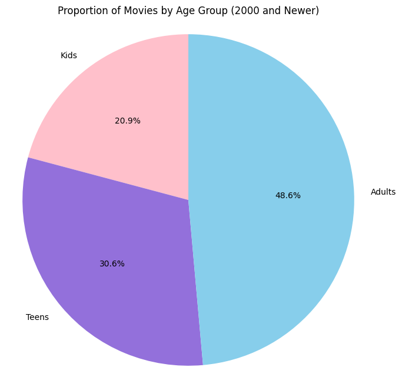
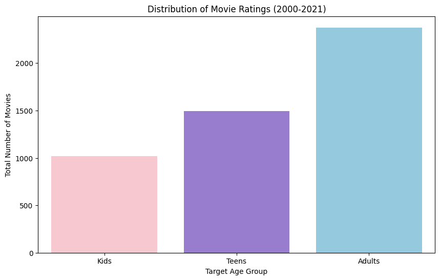

This project explores Netflix movie data using Python, pandas, matplotlib, and seaborn. The goal was to determine which age group had the most movies released on Netflix between 2000 and 2021.
Which age group had the most movies released on Netflix from 2000 to 2021?

This pie chart shows the percentage of Netflix movies released between 2000 and 2021 for Kids, Teens, and Adults.

This bar chart compares the total number of movies targeted toward each age group.
The analysis showed that movies targeted toward adults made up the largest portion of Netflix releases. Teen-focused movies ranked second, while children's movies were released less frequently.
This suggests that Netflix primarily focuses on content for older audiences, even though family and children's content remains an important part of the platform.
This project helped me learn how to clean, analyze, and visualize real-world data. I gained experience working with datasets, creating charts, and using data to answer meaningful questions.